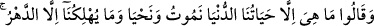
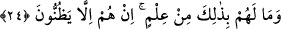

üzere bir tarikat erbabının (mürşid-i kâmil) tedip ve terbiyesinde riyâzat ahkamını
yerine getirmeyen nefs ve hevâsından tamamen sıyrılıp çıkmayan, hevâsını tedip
etmeyip vuslat erbabı bir imama uymayan bilakis küfür ve sapıklık imamlarına uyup
aklî şüpheler ve zannî delillerle onların izini takip eden kimse şeytanın tuzağına düşer.
Şeytan onu nefs ve hevâ yularından tutar ve onu kendi çöl atmosferinde sapıtır. Bazan da
onu güya aklın tasfiyesi ve düşüncenin selameti için riyâzata ve şehevâtı terk etmeye
dâvet eder. Böylece güya ona hakikatleri anlama hissi verir.
Nihâyet onu şüphe vadilerinin uçurumlarına yuvarlayıp helâke sürükler. Bu kimse her
çeşit sapıklık içinde bocalayıp her uzak yoldan sapıklığa yuvarlanır. Artık bu insanın
kaybı kazancından fazladır. Noksanı üstün amelinden fazla olur. Bunlar uzak bir
sapıklıktadırlar. Nefsî mutluluktan güya Allah’a yakınlık sağladıklarını zannederler.
Artık bunların yuları nefs ve hevâlarının eline geçmiştir. Bunlar nefis ve şeytanın
hilesine düşmüşler, hiç anlamadıkları taraftan helâke sürüklenmişlerdir.
Mesnevî’de şöyle denilmiştir:
“Allah’ın ipi nedir? Hevâyı terk etmek.
Çünkü bu hevâ Âd kavmine bir kasırga olmuştur.
Halk, hevâ yüzünden zindanda oturmaktadır.
Kuşun kanadının bağlı olması hevâ yüzündendir.
Gayb âleminde rûha işkenceler vardır.
Fakat sen (bedenden) kurtulmadıkça o işkenceler gizlidir.
Ondan kurtulunca işkenceyi ve azabı görürsün,
Çünkü zıt zıddıyla âşikâr olur.
Allah korkusuyla hevâyı bıraktığında;
Hakk’ın cennet çeşmelerinin suyundan sana bir kâse sunulur.”
24. Dediler ki: Hayat ancak bu dünyada yaşadığımızdır. Ölürüz ve yaşarız. Bizi
ancak zaman helâk eder. Bu hususta onların hiçbir bilgisi de yoktur. Onlar sadece
zanna göre hüküm veriyorlar.
“Dediler ki:” Kureyş kâfirleri ve müşrik araplar iyice azgın ve sapık olduklarından
dirilişi inkâr ederek “Dediler ki: “Ne varsa” Bizim içinde bulunduğumuz “dünyâ
hayâtımızdır, başka bir şey yoktur. Ölürüz, yaşarız” Ölüm ve hayat bize dünyada
isabet etmektedir. Bunun ötesinde başka bir hayat yoktur. “Bizi zamandan başkası helâk
etmiyor.” Bu, zamanın geçmesidir. Bu da dünyanın ömrüdür. “Fakat onların bu
hususta” hayatın sadece dünya hayatından ibaret olduğu, ölüm ve hayatın zamana isnâd
edilmesi hususunda aklî ve naklî “hiçbir bilgileri yoktur. Onlar sadece